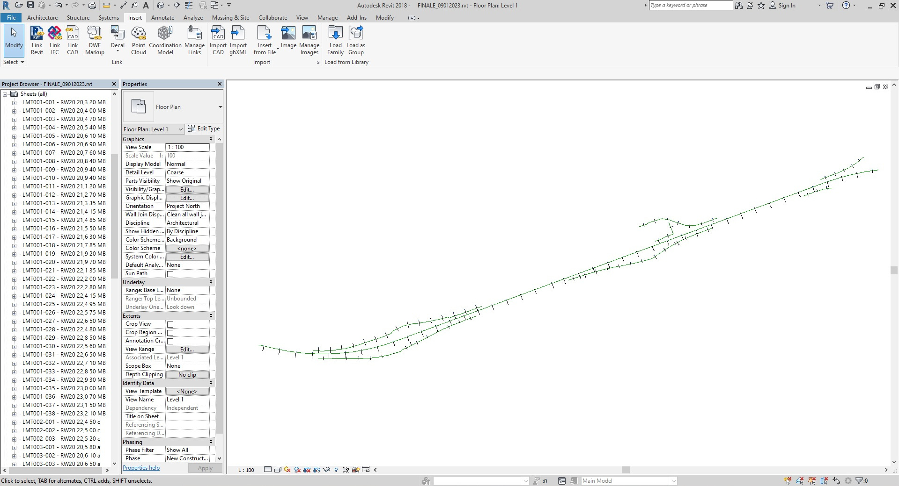
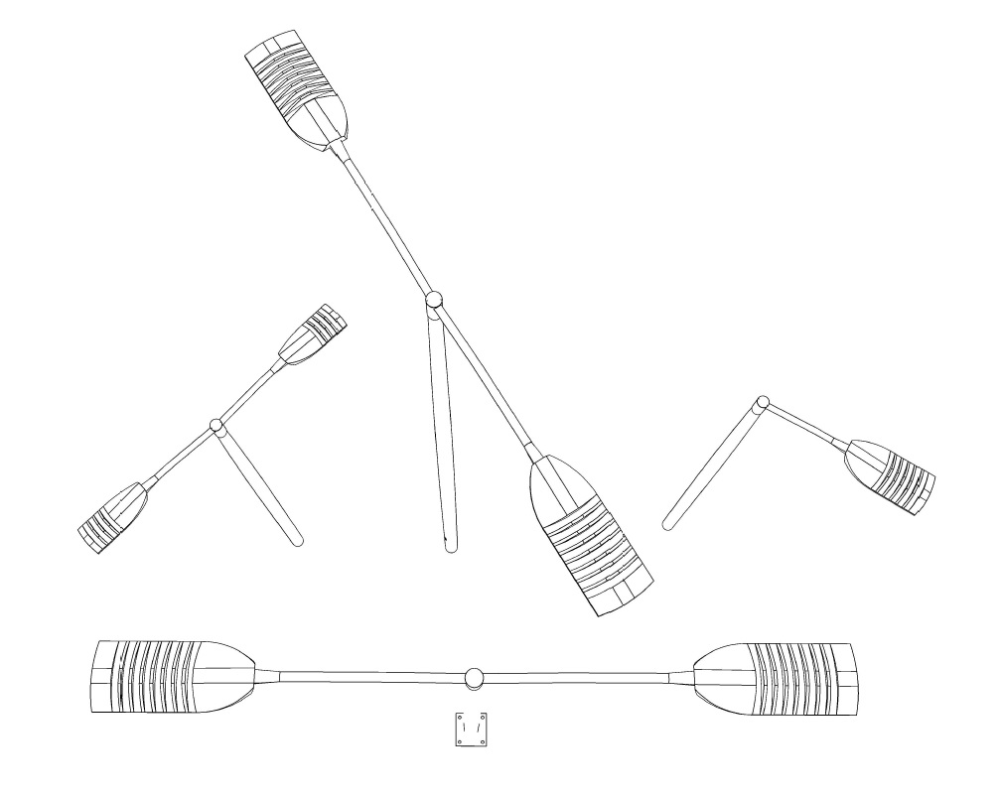
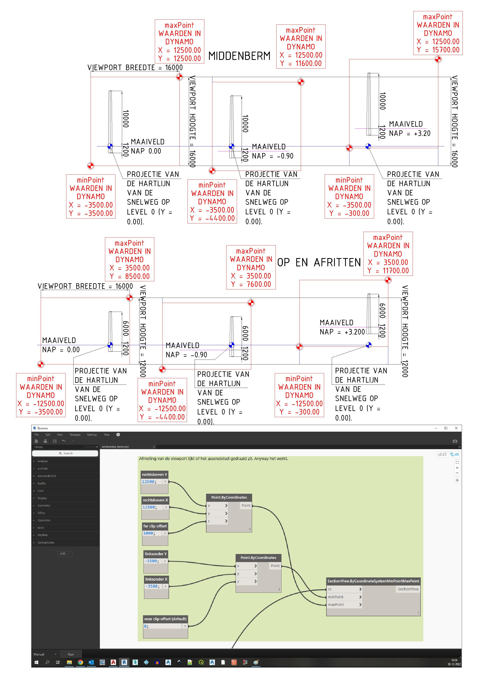

Revit Dynamo Blog.
Dinsdag 6 december 2022.
In een oude vraag gedoken. Kan ik Revit gebruiken als een veredeld GIS-programma? In AutoCAD en QGIS kom ik een heel eind met het in en uitvoeren van routines of gedoe met blokken op en langs 's Heeren wegen. Binnen Revit moet ik dat nog gaan uitpluizen. Tijdens mijn tijd bij BAAK BBV Blankenburgverbinding, waar ik via Optimus Advisering aan het werk was, had ik wat dingetjes gedaan met Revit. De verkeersborden in 3d gemaakt en een probeersel van een type voedingskast, daar hield het jammer genoeg mee op. Wilde diep in Revit duiken, maar plotsklaps was daar de BAM met een leuk project. Binnen Revit heb je (sinds 2013) Dynamo, iets van een grafische gebruikers omgeving waar je wat dingen zou kunnen automatiseren. Wilde alle elementen-data uit AutoCAD extraheren in één tijd op zijn plek werpen in de Revit ruimte. Had nog wat oude bestanden liggen om een poging mee te wagen. Daar begon ik niet heel voorspoedig aan. Locatie informatie uit AutoCAD, dat moest je vermenigvuldigen met duizend en dan de projectpositie eraf trekken. Meters tegen millimeters en een verlegd nulpunt, hoe zat het ook weer?

Als studie object had ik een stuk rijksweg van een kilometer of drie gekozen, A20 tussen Schiedam en Vlaardingen. Dynamo was even wennen. Na het aan elkaar knopen van een berg nodes, zag ik maar niets gebeuren als ik op de bel drukte. Achteraf omdat mijn coördinaten buiten het bereik van het project waren gelegen. Zelfde project basepunt als dat we bij de Blankenburgverbinding gebruikten, die hoefde ik niet te verzinnen. Als de coördinaten te ver van het projectpunt zijn verwijderd, gaat de hele zaak niet door en krijg je een foutmelding in Dynamo. De getallen in millimeter worden zo groot dat je je er geen voorstelling meer van maken kan. Wat is er nou dan weer niet goed? Tranen in mijn ogen. Van alle x en y waarden de coördinaten van het project basepunt afgetrokken en toen hadden we binnen het Dynamo-scherm zicht op de punten. Deze z-waarden haalde ik uit QGIS. Spot elevation met het AHN (in millimeters).

Nog eens kijken naar families en masttypen, maar ben tevreden met de voortgang. Volgens mij kunnen we alles in de ruimte laten ploffen straks. Kasten, portalen en lichtmasten, de hele santemekraam.
Woensdag 14 december 2022.
Het plaatsen van de lichtmasten heb ik enigszins onder controle. Om het proces wat meer inzichtelijk te maken heb ik de masten enorm groot gemaakt. Het is een goeie gewoonte je AutoCAD bestanden zoveel mogelijk te optimaliseren vóór de extractie. Wellicht nog wat meer aan informatie in de blokken stoppen. Buiten een x, y, z en de draaihoek gaarne in ieder geval een naam en een elementcode. Anders kan je de z-waarde uit QGIS niet terug aan de juiste lichtmast koppelen bijvoorbeeld.

Nu nog even een routine vinden om de masten te draaien. Lijkt niet belangrijk maar er zit een luik in de schacht waar de kabels in en uit lopen (onder de grond). Die houden ze denk ik evenwijdig met de kant asfalt dus de kabelloop. Daarna doe ik de uithouders plaatsen en draaien. Nog even kijken of ik alle family-instances nog ga nummeren, dan kan ik selecteren bij naam, en de parameter voor rotatie invoeren. Hopelijk kan dat ook met een Excel bestand. De family van de uithouders heb ik op die manier ingericht. Dat is al bijzonder en komt niet veel voor in Revit. Zal nog wel tegen een en ander aanlopen voor het me lukt, gelukkig werkt dat gepuzzel verslavend en blijf ik door zoeken.

Donderdag 15 december 2022. Hieronder Holysingel A20 met een paar knoeperts.
Vanmorgen vroeg begonnen. De avond ervoor was ik na het zien van een paar YT video’s overtuigd geraakt dat het allemaal wel mee zou vallen met de rest (onder andere het maken van een dwarsdoorsnede in het wegprofiel ter hoogte van de masten). Ook nog een nieuwe familie gemaakt voor de uithouder (het gedeelte waar uiteindelijk het armatuur aan komt te hangen). Dat viel nog even vies tegen. Dynamo werkt vooral met lijsten. Klinkt als een database. Omdat ik veel met QGIS en PostGIS doe werken, was er die herkenning. Ook daarzo draait alles om eindeloze rijtjes met getallen en codes.
Het was lastig om er weer even helemaal in te komen, dat Revit. Maar na een paar dagen begon het me weer te dagen. Wel moest ik allerlei zaken weer met nieuwe ogen bekijken. In de tussentijd toch wat wijzer geworden. De lichtmasten moet ik op een andere manier gaan samenstellen. Normaal gesproken bestaat er geen draaihoek binnen Revit families. Verder zou er in 2D AutoCAD tekening een en ander moeten worden bijverzonnen. In ieder geval een methode dat de blokken voor lichtmasten en kasten worden aangepast, zodat je de draaihoek rechtstreeks in het Dynamo script gebruiken kan. Voornamelijk het CW of CCW gelijk schakelen van de draaihoek in AutoCAD. Eigenlijk kan er nog veel meer geoptimaliseerd worden. kGa in ieder geval nog een vlak maken dat loodrecht op de as van de weg kan meelopen. Om de dwarsdoorsnedes te maken. Verder een nieuwe computer graag. Data-worstelen kost keiveel RAM. Over een dag testen drie keer de machine opnieuw op moeten starten. Zit onder andere in Microsoft Office dat ten alle tijde een goed verhaal in het voorbeeldvenster van explorer wil laten zien van een Excel bestand. Wellicht dat voorbeeldvenster uitschakelen. Kan natuurlijk ook.
Zondag 18 december 2022.
Na heel, heul veel architecten-YouTube kijken kwam ik iets tegen waar ik mee verder kon. Gelijk weer terug naar de AutoCAD tekening waaruit ik de blokken extraheer. Nodig, een naam (die ik later bij de dwarsdoorsnedes gebruiken kan (en in de onderhoek)). Net als bij de draaihoek, de elementen aanpassen en updaten. Dan de informatie in de families gieten met Dynamo. Met een bepaalde node kan je een vlak langs een lijn lopen laten. Een andere ingewikkeld genaamde node regelt het zo, dat je met die parameter een sectionview maakt. Dus ik loop per wegvak het tracé langs, met het beloofde vlak loodrecht op de hartlijn van de weg. Elke keer als ik bij een element stoppen doe, noteer ik de parameter. (kan automatisch weet ik bijna zeker). Die parameter loopt van 0 aan het begin van de lijn, tot 1 aan het eind. Dan krijg je dus weer een lijstje (jaja), dat je af kan raffelen met een Excel bestand of iets dergelijks. Die plaatst automatisch alle secties, geen gezicht. Nu nog iets verzinnen om ze te hernoemen naar de BSP code of zoiets. Hernoemen bleek niet nodig. Dat moet ook automatisch kunnen, net als dat weer doorsluizen naar de onderhoek.
Hier zijn de dwarsdoorsnedes automatisch geplaatst. Zeker voor de lichtmasten kan je steeds dezelfde hoogte en breedte gebruiken voor de view. Per alignement kan je steeds alle elementen die je tegenkomt op de middenberm op de foto knippen. Ook nog gelukt om de dwarsdoorsnedes op de layout geplaatst te krijgen. Ik heb gezien (tutorial op YouTube) dat je de plaats van de dwarsdoorsnede met de koordlengte van de lijn kan regelen. Heb de eerste paar layouts bekeken, maar voor ik de hele serie ga afwerken, wil ik meer dingen kunnen besturen. Had nu de oude lichtmasten gebruikt (normaal formaat). Omdat ik de hartlijn van de weg op een andere manier had gemaakt, waren alle lengtes veranderd en moest ik de lijst met afgelegde meters overnieuw maken. Heb eigenlijk nog geen lijn getrokken. Alles via Excel lijsten naar binnen gestampt.
Maandag 19 december 2022.
Later heb ik in alweer een tutorial een Dynamo script gezien, voor het aanmaken van layouts en een gedeelte van de onderhoek met labels invullen vanaf Excel. Beetje aangepast aan mijn manier van werken. Toen een arbeidsgang om alle doorsnedes op een layout te plakken. Zit alleen met de schaal van die doorsnede, wil ik eigenlijk in kunnen stellen (hier pakte het toevallig aardig uit (default blijkbaar 1 : 100)). Je kan wel aparte packages installeren in Dynamo, waar je de plaats van de viewport met een x- en y-waarde regelen kan op de layout, maar die werken niet in Revit 2018. Heb het later met een hack opgelost (de layout onder de viewport verschoven).
Zondag 25 december 2022.
Vanmorgen werd ik wakker, en wist ineens hoe ik de aangepaste families moest indelen. Heb afgelopen week geprobeerd om een manier te vinden, om al de onderdelen in één family onder te brengen en hem dan pas te draaien. Viel nog niet mee. Dacht dat Russische-poppetjes-gewijs wel even te gaan doen, viel tegen. Het zou kunnen wat ik wil alleen zijn niet alle families punt-gebaseerd. Sommige hebben een vlak nodig om tegenaan te plaatsen. Al met al heb ik het hele gedoe zwaar onderschat. Per type lichtmast helemaal opbouwen, plakken en knippen uit alle families die je maar wil (masten, uithouders en armaturen) en dan een naam geven en de parameter voor rotatie toevoegen. Ook nog geworsteld met wat ik dacht dat de lengte parameter van een lijn was. Die van 0 naar 1 loopt, je weet toch? Die blijkt in een bocht veel harder te lopen dan op een recht stuk. Gelukkig was er ook een node voor de koordlengte in een lijn. Opgelost dus, en in AutoCAD kan je dat van tevoren mooi doen met de hartlijn van de weg. Dan kan je die opdelen in lijnstukken, de lengte nemen en de hele lijn weer opbouwen qua totale lengte. Al die lijnstukken, daar maak je ook weer een lijstje van en dan zoef naar binnen janken (gebruik je voor de dwarsdoorsnedes (die komen nu heel nauwkeurig terecht)).
Lange masten voor in de middenberm (10.0 m.) soms in een voetplaat op een kunstwerk, kortere voor bij de op en afritten en verkeerspleinen (6.0 m.). Om eerst eens alles op ware grootte te bezien gebruikte ik oude bestanden op ware grootte. Tip aan mezelf: Je werk een beetje in de gaten houden. Als je iets aanpast in Excel eerst opslaan en het bestand overschrijven voor je verder gaat in Dynamo. Scheelt een hoop verdriet.
En toen ging ik draaien. Het plaatsen liep voortreffelijk, daar wil ik niks van zeggen. Maar tijdens het draaien vlogen de lantaarnpalen je om de oren. Door een combinatie van constraints in de schetsen, werd het model instabiel zodra je er een draai aan gaf. Asymmetrische gevormde masten gierden uit de bocht. Dus daar moest ik een en ander aan wijzigen. Symmetrisch maken en de onderdelen die je extra hebt geplaatst onzichtbaar maken in de family. Wel op een dusdanige manier dat de onderdelen niet worden meegeteld bij het samenstellen van de stuklijst.
Donderdag 29 december 2022.
Vandaag zou ik alles een beetje afraffelen en een eindconclusie trekken of iets dergelijks. Nieuw project binnen Revit met verse families van de grond af opbouwen. Na een paar routines, het stuk snelweg stond alweer helemaal vol, bleef ik toch weer ergens hangen waar ik me aan ergerde. Sommige viewports moet je strekken en rekken om de lichtmast te kunnen zien. De lijn waarmee de sneden worden getrokken ligt op level 0 maaiveld. Kan het viewport zo groot mogelijk maken in een A4, maar soms moet je scrollen in de viewport en dat moet niet hoeven. Dus weer terug naar de tekentafel. De waarden zijn er allemaal wel maar staan soms op een ander excel document, dus moet je een beetje plakken en knippen om de juiste combinatie te vinden (de z waarde van dat type lichtmast). Een lijst met maximum en minimumwaarden voor de y component van de viewport. En weer gaat dat gewoon goed komen. Niet zeuren gewoon even regelen en daarna wel weer door. Wordt vanzelf handig in het samenstellen van die lijsten.
Vrijdag 30 december 2022.
Toch lastig al die bestanden uit elkaar houden. Moet daar flink in gaan verbeteren want ik haal af en toe alles door elkaar. Net als bij QGIS heb ik binnen de kortste keren allerlei bestanden open staan en overschreven. Gebeurt nou eenmaal of je moet na elke arbeidsgang even al je bestanden opslaan en sluiten. Geen tijd voor, en maar door kachelen. Huilon. Ik had de doorsnedes aardig onder controle. Behalve het niveau in y-richting wilde ik ook zijwaarts de breedte met een paar coördinaten aangeven zodat je af en toe en grotere of kleinere uitsnede maken kan. Al naar gelang wat je wilt laten zien en waar. In één richting ging dat goed, maar toen ik de zaak negentig graden ging omdraaien, raakte ik geheel en al de weg kwijt. Morgen nog een poging wagen, wellicht de richting van de lijn omdraaien. Dan zou het makkelijker gaan (amateur).
Zaterdag 31 december 2022
Een laatste maal de autocadbestanden aangepast (hopelijk) een elementvolgnummer en een typevolgnummer toegevoegd aan het block dus de extractie. Om de volgorde van de verschillende types vast te leggen dacht ik. Maar toen ik nu vol vertrouwen alles in de ruimte had geplakt ging het weer mis met het aanpassen van de rotatie. Daar raakte Revit de tel of de volgorde kwijt (of ik doe iets hopeloos fout (kan natuurlijk ook)). Lichtmasten en kasten staan alle kanten op te wijzen. Behalve de goeie. Niet begrepen wat er aan schort, maar ik wil door. In ieder geval ben ik terug naar per type lichtmast de parameters invullen waaronder de draaihoek. Als ik dan een alignement ga opbouwen, heb ik alle elementen nodig die ik tegenkom als ik van de lage naar de hoge kilometrage de snelweg bewandel.

In AutoCAD heb ik de stations vastgesteld waar de machine halt houdt en een dwarsdoorsnede maakt. Dan is het makkelijk om ze op volgorde te rangschikken (en in Dynamo een lijstje te maken), dan komen je dwarsdoorsnedes op het juiste tekeningenvel. Die lelijke snotterbel op de layout is een instelling van view title maar ik heb de kracht niet meer. De naam van de dwarsdoorsnede en het nummer doen we ook doorlinken zodat daar geen misverstanden over kunnen ontstaan. Nu wil ik eigenlijk nog een stuklijst op elke tekening. Maar wellicht is dat te veel gevraagd. Ben toe aan een berg bier. En ik weet dat met meer recente versies van Revit veel meer te knutselen valt in Dynamo. Voor de goede orde ik heb alleen de blokken in AutoCAD iets aangepast (uitgebreid met een paar volgorde attributen voor element en (lichtmast of kast-type). Heb in Revit een lijn getekend de hartlijn van de weg (na 2020 zou dat niet meer hoeven omdat vanaf dat jaar Civil 3D ook is uitgerust met Dynamo). Die vervangt dat eindeloze gepruts in AutoCAD met lisp routines en vlaxen. Was daar vóór deze knutselpartij nog volgas ingedoken. Blij dat dat als het goed is allemaal verleden tijd is. Verder moet ik erkennen, dat een portaal op deze manier naar binnen werpen wel een andere koek is als een lichtmast. Dat wordt denk niks. Ga met standalone Dynamo verder dingetjes met Python uitproberen (daar is binnen Dynamo een module voor en er bestaat ook zoiets als pyRevit).

Zaterdag 7 januari 2023.
Na wat testen kwam ik erachter dat het eenvoudiger en meer accuraat uitgevoerd kan worden. Dat vlak dat langs een gebogen lijn loopt en hier een daar stopt om een opname te maken, zag er in Dynamo geweldig uit. Goed verhaal ook, maar is gans niet nodig. Als de dwarsdoorsnede maar wordt gemaakt op de plaats waar het moet (wat je wilt laten zien) ben je klaar. Tegenwoordig trek ik een lijn door het element die tangentieel aan de hartlijn van de rijksweg loopt. Dan doe ik een stapje terug van één meter zodat de kijkdoos van de dwarsdoorsnede exact door de mast loopt (far clip plane). Op deze manier heb ik ook maar één lijnsegment per element, hou ze apart in Excel. Al die rechte stukken trek ik in Revit, en maak per streng een selectieset die ik een christelijke naam geef. Tot nu toe maakte ik een soort AutoCAD-polylijn in Revit een Polycurve van de hartlijn van de rijksweg. Probleem is dat alle vertices uit AutoCAD in Revit worden vertaald als een controlepunten van een spline. Alles bij elkaar hebben die twee nul met elkaar van doen. Toch wel een paar weken geprobeerd om in Revit iets als een polylijn te maken. Tijd verknoeid, dus. Kwam ook nooit uit met de afstanden en lengtes van lijnstukken en totalen. We hebben het hier over een computer. Ik vergeleek appels met peren, en dat stopte pas toen ik alles losliet. Revit werkt iets anders als AutoCAD. Dan is er een vers aangepast Dynamo-script dat de snedes regelt. Maaiveld niveau en gebieden van interesse van tevoren bepaald, en draaien maar. Door deze wijze van werken flipt de dwarsdoorsnede ook niet meer om. Iets dat mij soms overkwam tijdens een arbeidsgang in Revit toen de hartlijn nog een spline was. Geloof dat ik het onder controle heb.
Voor dit plaatje had ik DTB AutoCAD bestanden gedownload van het stuk rijksweg. De 3d polylijnen stellen de rand asfalt, de verschillende verfstrepen (op dat asfalt) of de geleiderail (in berm of op kunstwerk) voor.
Maandag 9 januari 2023.
Vanaf de start viel me de volgorde van de in de Revit-ruimte geslingerde elementen op. Revit geeft elk nieuw gevormd element een volgnummer (elementID) dat correspondeert met de regel in je tabel (excel bestand) waarmee je de ruimte gaat bevolken. Die zal Revit altijd gebruiken. Dus als je later een verzameling maakt waar je een bewerking op uitvoert, zal Revit dat altijd in de oorspronkelijke volgorde doen. Dat maakt een en ander een stuk makkelijker (nu ga ik er ook rekening mee houden). Daarom dus die elementvolgnummers en typevolgnummers per lichtmast of kast. Dat komt altijd van pas als je gaat selecteren in Revit. Zag pas onlangs dat nadat Dynamo elke dwarsdoorsnede op een A3 heeft gekwakt, binnen de layoutbrowser alles staat gerangschikt op type. Dus de volgorde van de dwarsdoorsnedes wordt losgelaten ten faveure van de verschillende types elementen. In de middenberm staan bijvoorbeeld hier en daar lichtnasten op een voetplaat, tussen 42 elementen zijn dat er 4. De layoutbrowser maakt eerst alle layouts met LMT-001, dat zijn er 38. Masten uit de middenberm op een kunstwerk op een voetplaat zijn van het type LMT-004 en staan een heel eind naar beneden scrollen in de verzameling layouts. Maar natuurlijk wel met het juiste dwarsdoorsnede-nummer. Per element hebben we dus eigenlijk nodig: Drie coördinaten, een draaihoek, een lijnstuk waarvan je de vector (of normaal) als richting voor je dwarsdoorsnede gebruiken kan, het lijnsegment heeft een start- en een eindpunt nodig (gelukkig nog in 2D), de dwarsdoorsnede wordt gemaakt op een bepaalde afstand van het startpunt (ergens op de lijn loopt het vlak exact door het element dat je showen wil), dan heb je nog zes getallen nodig die alle zijden van de kijkdoos van de dwarsdoorsnede bepalen, een elementvolgnummer en een typevolgnummer. Onderdehand al zestien kolommen vol met ellende en daaronder whatever hoeveel rijen aan elementen je neer wil zetten. In mijn geval 104. Vier verschillende types lichtmasten en een type kast. Onderverdeeld in de volgende onderdelen.
LMT-001. 38 stuks.
LMT-002. 4 stuks.
LMT-003. 57 stuks.
LMT-004. 3 stuks.
OV Kast. 2 stuks.